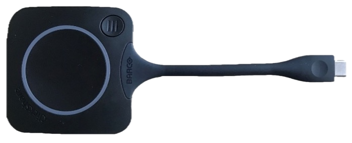

De Sinne Skerm
Als je met het scherm in 1.6 De Sinne wilt deelnemen aan een Teams vergadering, nodig dan bij Locatie De Sinne Skerm uit. De uitnodiging wordt automatisch geaccepteerd.
Op het scherm is de afspraak dan automatisch zichtbaar en je hoeft dan alleen nog maar op 'Deelnemen' te klikken.
Als je alleen je laptopscherm wilt delen op het grote scherm, hoef je geen Teamsvergadering aan te maken.
Scherm
Aanzetten d.m.v. de Aan knop linksonder op het scherm. Opstarten duurt even. Om het scherm uit te zetten druk je op de Aan/uit knop linksonder of 2 keer op de rode powerknop op de zwarte afstandbediening.
Als er een blokje met de tekst ‘NO SIGNAL’ over het scherm gaat, moet je even op het scherm tikken om de Teams-omgeving wakker te maken.
Dongle
Er ligt een dongle waarmee je je scherm van de laptop kunt laten zien op het scherm (en kunt delen via Teams).

Als je deze aansluit opent na korte tijd het menu voor de ClickShare Button. Mocht dat niet gebeuren, dan moet de applicatie handmatig gestart worden. Kies bovenaan deze pagina het besturingssysteem van je laptop voor instructies.kun je in de Windows-verkenner naar de externe schijf ClickShare gaan en ClickShare_for_WindowsFinder naar de externe schijf ClickShare gaan en ClickShare_for_MacOSX openen.

Vervolgens kun je in het venster van ClickShare kiezen of je het hele scherm wilt delen of een bepaald venster. Door vervolgens op het witte cirkeltje te klikken, deel je het scherm. Op de grote knop op de dongle drukken werkt ook.